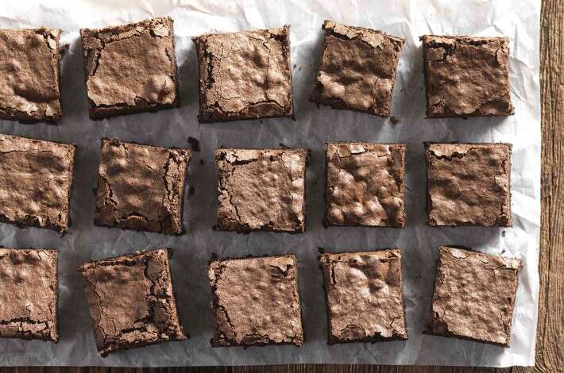

gf brownies
description
ingredients
- 1/2 c sugar
- 8 tbs butter, cold
- 1/2 tsp salt
- 1 tsp vanilla
- 3/4 c cocoa
- 3 large eggs
- 3/4 c 1:1 gluten free flour
- 1 tsp baking powder
- 1 c chocolate chips
steps
- preheat the oven to 350°F. Grease an 8" square pan
- place the sugar, butter, and salt in a microwave-safe bowl or saucepan. Heat over medium heat, stirring with a heatproof spatula until the butter melts and the mixture lightens in color. This step helps melt the sugar, which will give the brownies a shiny crust.
- If you've heated the sugar and butter in a saucepan, transfer the mixture to a bowl; otherwise, just leave the hot ingredients right in their microwave-safe bowl. Blend in the vanilla and cocoa, then add the eggs and mix until shiny.
- blend in the flour and the baking powder. stir in the chocolate chips
- pour the batter into the prepared pan, spreading it to the edges.
- bake the brownies for 33 to 38 minutes, until the top is set; and a cake tester or toothpick inserted in the center comes out clean or nearly so, with perhaps a few wet crumbs, or a tiny touch of chocolate at the tip of the tester.
- remove from the oven and cool for about 15 minutes before cutting. Once the brownies are cool, cover tightly with plastic.